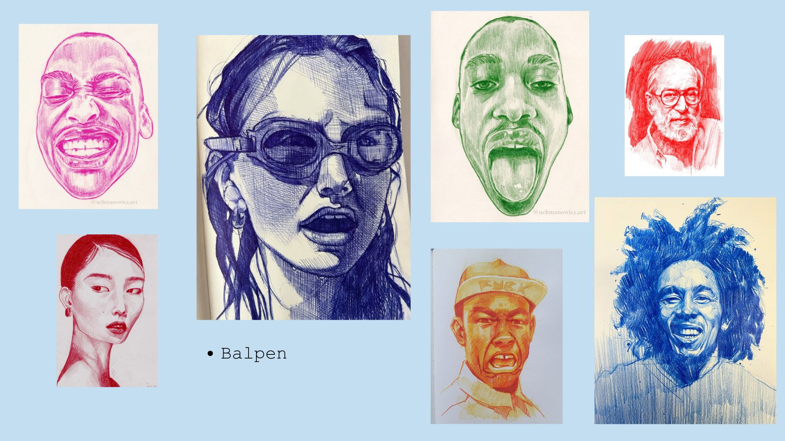
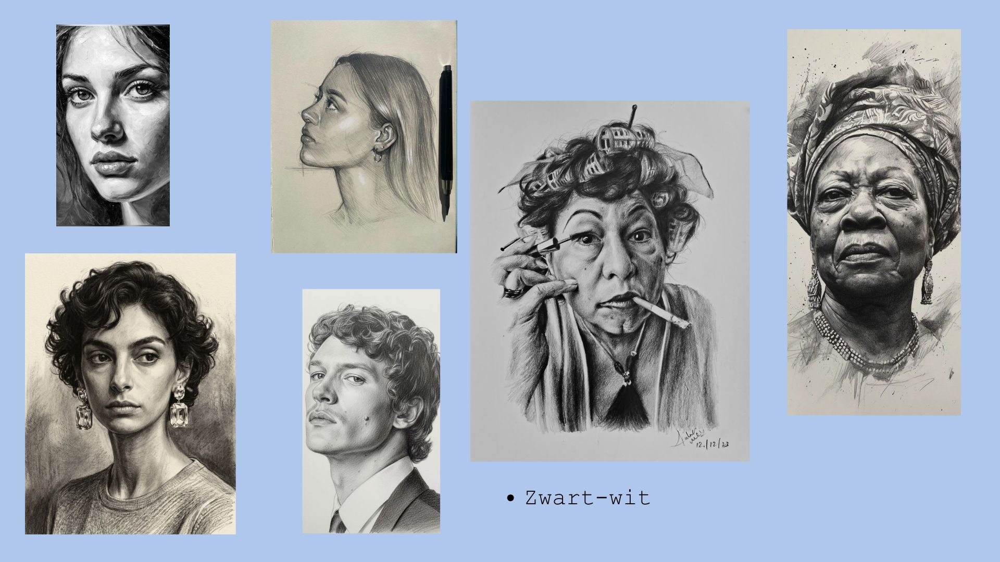
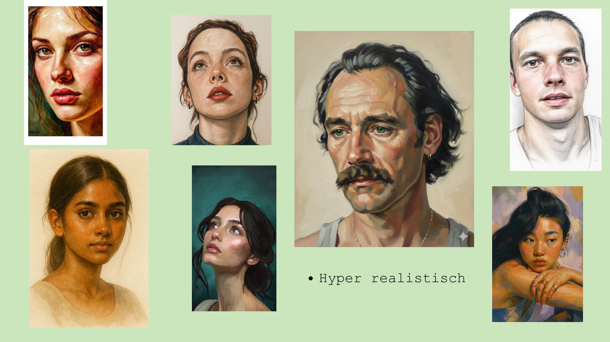

class: center, middle # <h1>Inspiratie voor de digital garden van Eva </h1> <p>Portret tekenen</p> --- <h1>Agenda</h1> 1. Onderwerp 2. 10 links 3. Mijn eigen werk 4. Balpen portretten 5. Zwart-wit portretten 6. Twee kleuren contrast 7. Hyper realistische portretten 8. Portretten met veel kleuren 9. Lay-out inspiratie 10. Typografie inspiratie 11. Introtekst --- <h1>Portret tekenen</h1> <ul> <Li>Teken zelf graag portretten</Li> <li>Heel veel variaties en mogelijkheden</li> <li>Meer leren</li> </ul> <img src="Afbeeldingen/tekening bank.jpg" width="400"> --- <h1>10 links</h1> <ul> <li><a href=" https://www.stabilo.com/nl/creativiteit-inspiratie/tekentips/zo-teken-je-een-portret/">Hoe teken je een portret</a></li> <li><a href="https://betaalbarekunst.nl/hoe-is-portretkunst-ontstaan/"> Hoe is portret tekenen ontstaan</a></li> <li><a href="https://schilderenopnummerwinkel.nl/benodigdheden-voor-portret-tekenen/">Wat heb je nodig voor portret tekenen</a></li> <li><a href="https://paintingexpert.nl/blogs/nieuws/portret-leren-tekenen">Tips voor portret tekenen</a></li> <li><a href="https://www.detekenleraar.nl/beroemde-portretten/">Beroemde portretten</a></li> <li><a href="https://estherbekker.nl/opdracht-portrettekening-in-grafiet-of-pastel-werkwijze/">Werkwijze portret tekenen</a></li> <li><a href="https://tekenclub.nl/hoe-leer-je-portret-tekenen/"> Hoe leer je portret tekenen</a></li> <li><a href="https://www.super-prof.nl/blog/leren-tekenen-in-stappen/"> Hoe teken je een gezicht</a></li> <li><a href="https://www.youtube.com/watch?v=DZU14sMgQ-A"> Video portet tekenen voor beginners</a></li> <li><a href="https://www.youtube.com/watch?v=3WCBb3-SEUI&list=PLxH7xnypMwfAAt2I9lW8AM9fBNF6cjlAc">Video waar gaat het mis bij portret schilderij</a></li> </ul> --- <h1>50 afbeeldingen</h1> <img src="Afbeeldingen/eigen werk.jpg" width="800" alt="Mijn eigen portretten"> --- <p></p> --- <p></p> --- <img src="Afbeeldingen/twee kleuren contrast.jpg" alt="twee kleuren contrast" width="1000"> --- <p></p> --- <img src="Afbeeldingen/veel kleur.jpg" alt="meerdere kleuren portret" width="1000"> --- <ul> <p>Layout inspiratie voor mijn digital garden</p> <img src="Afbeeldingen/inspiratie lay-out.jpg" alt="Lay-out inspiratie" width="900"> </ul> --- <ul> <p>Typografie inspiratie</p> <img src="Afbeeldingen/Inspiratie typografie.jpg" alt="Typografie inspiratie" width="900"> </ul> --- <h1>Introtekst</h1> <p> Ik wil met mijn digital garden laten zien hoe interessant portrettekenen is en hoe verschillend iedereen een gezicht kan interpreteren. Naast mijn eigen portretten wil ik ook werk van andere kunstenaars laten zien, aangevuld met tutorials,handige artikelen en kleine weetjes over portrettekenen. </p> <!-- Laat onderstaande staan anders breekt je presentatie -->